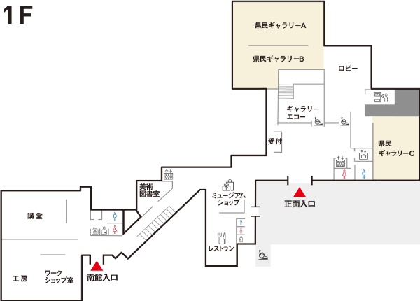
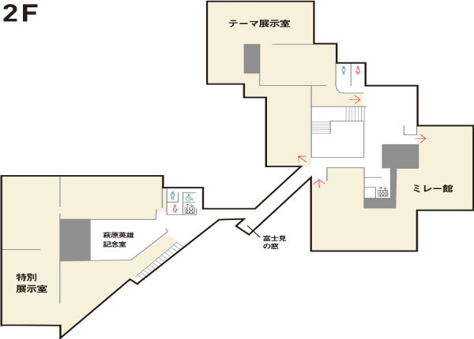
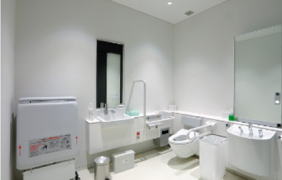
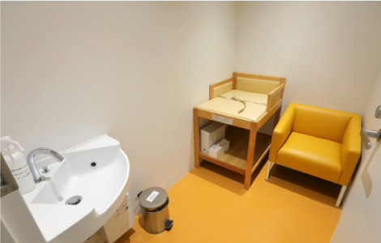

開館時間・休館日
開館時間
10:00-18:00（入館は17:30まで)
休館日
月曜日（祝日の場合はその翌日）祝日の翌日（日曜日の場合は開館）年末年始、その他臨時開館･休館あり
交通案内
〒 177-0034 東京都国立市富士見台2-12-2
施設案内


サービス
駐車場
東山魁夷館北側には信州パーキング・パーミット制度にて指定された方の 専用駐車場として、車椅子使用者用駐車区画が4区画、その他の駐車区画が 8区画あります。また、本館2階南側と3階東側に車椅子使用者用駐車区画が それぞれ2区画あります。駐車できる台数には限りがありますのでご了承ください。
車いす
車椅子の貸出を行っております。 各階の受付またはお近くのスタッフにお申し出ください。 全ての階に多機能トイレがあります。

ベビーカー
貸出ベビーカーを用意しております。 本館1階受付またはお近くのスタッフにお申し出ください。
